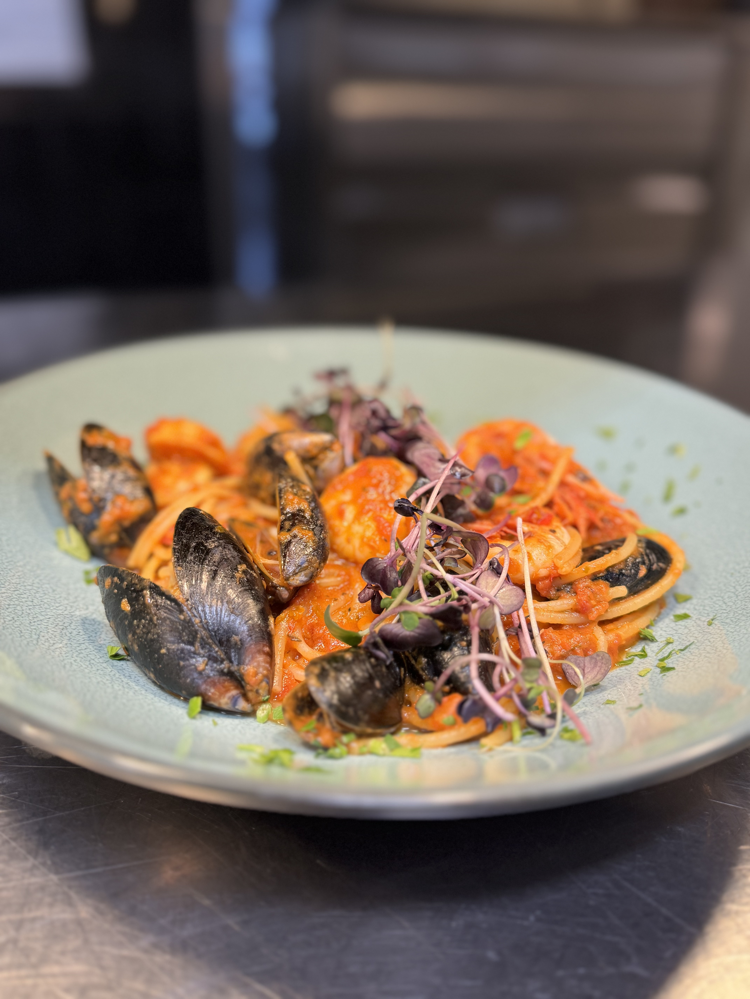
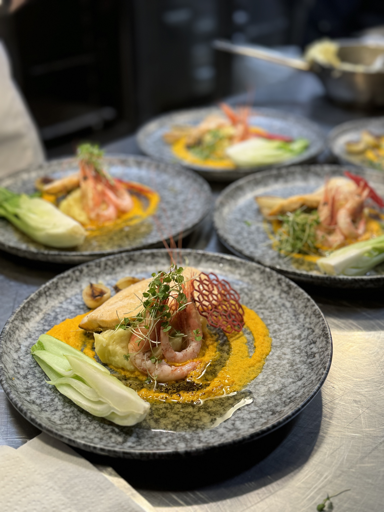
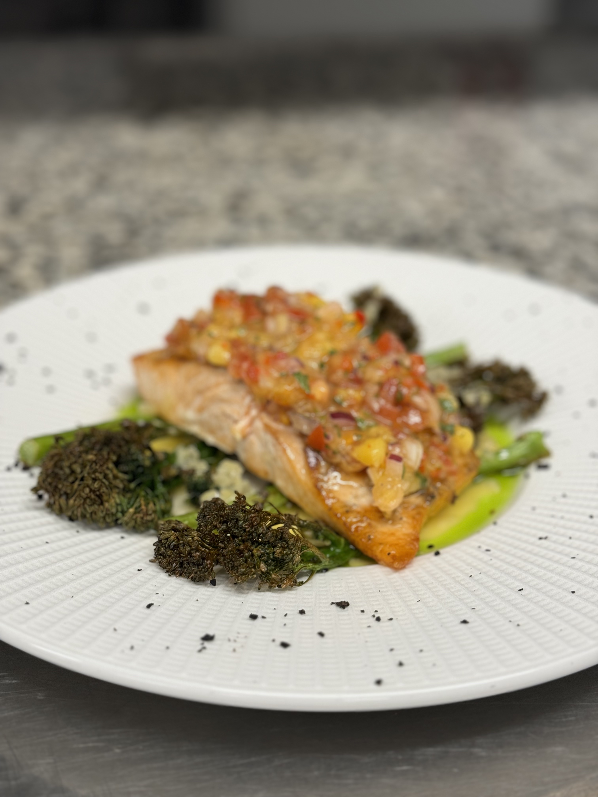
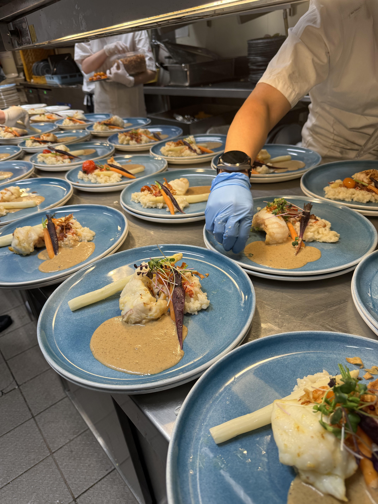
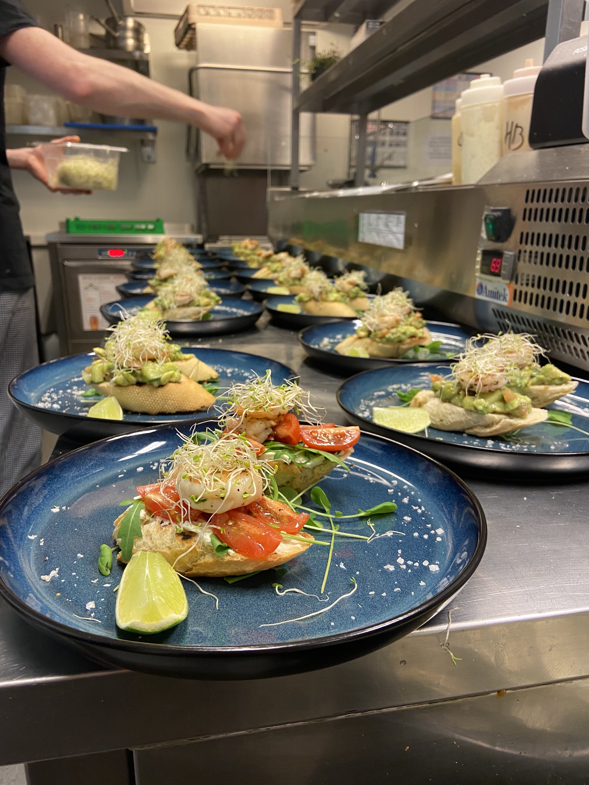
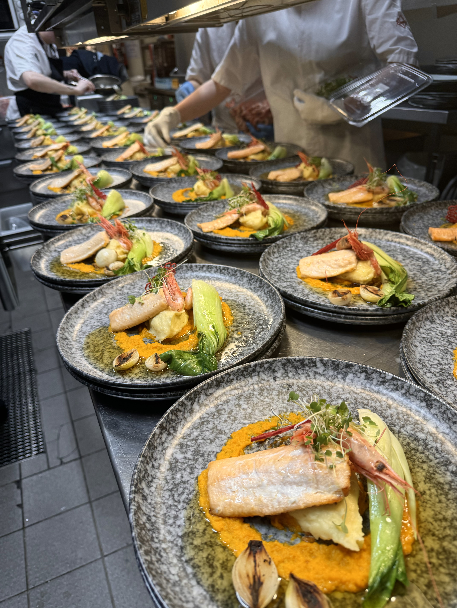
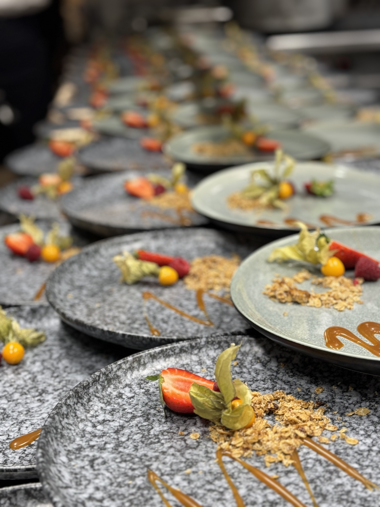
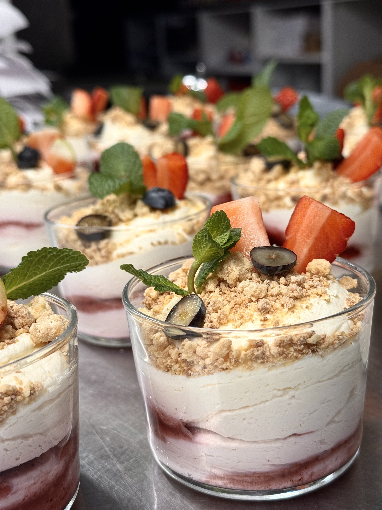
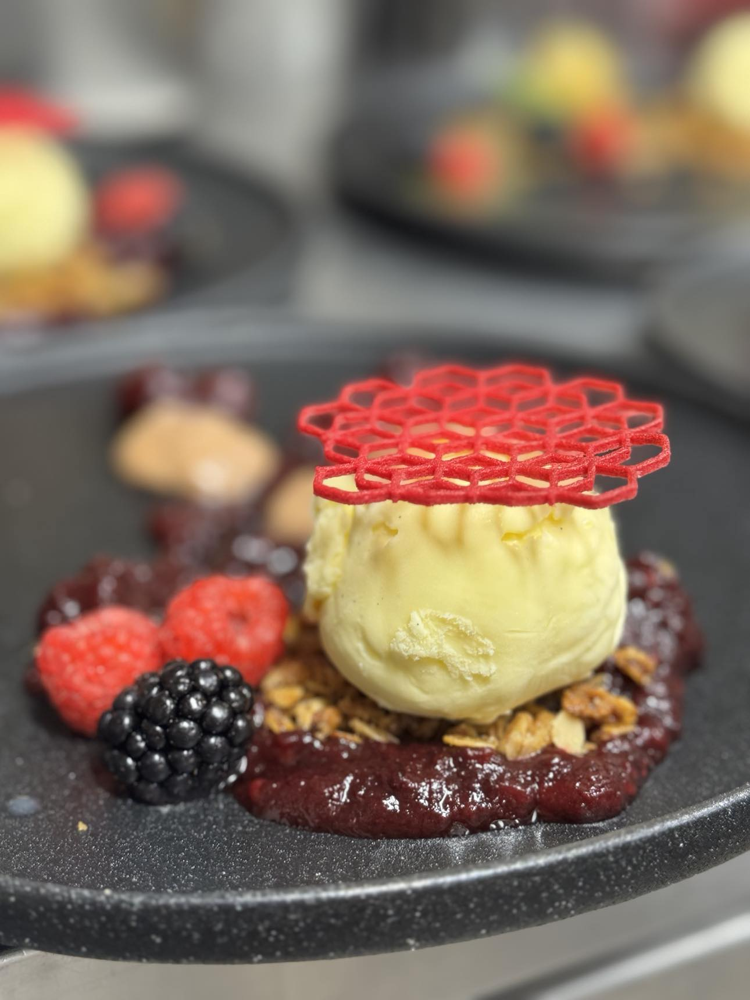

Bringing Flavour to Life with Every Dish 🪄
Growing up I always wanted to work with food, so I decided to go to school of cooking in Vilnius, Lithuania. After getting my education I started gaining skills working at various restaurants at the capital. Right now I’m trying to broaden my professional horizons and gain even more experience in different cuisines while offering my current accumulated knowledge.



Restaurant Becks Brasserie, Drammen, Norway (2024.09 – present)
Restaurant Skutebrygga, Drammen, Norway (2023.10 – 2024.08)
Restaurant Perleporten, Geilo, Norway (2022.03 – 2023.09)
Restaurant Talutti, Vilnius, Lithuania (2019.08-2021.12)
Hotel Radison Blu, Vilnius, Lithuania (2019.03-2019-08)
Bakery Geheb, Norway (2018.07-2018.09)
Restaurant Lazdynų Žibutė, Vilnius, Lithuania (2018.04-2018.07)
Restaurant Le Bistrot Des Copains, France (2018.03-2018.04)
Restaurant Čili pica, Vilnius, Lithuania (2018.10-2019.01)
Bakery Geheb, Norway (2016.05-2016.09)



...and create culinary experiences that will blow your mind!
Feel free to call me: 📞 +370 623 60542
Or send me and email: 📧 mindaugasjovaisas@gmail.com


